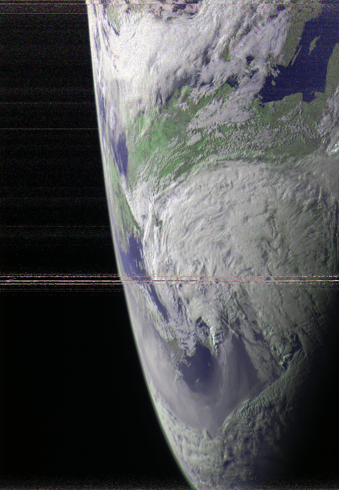

19 May 2022
On May 4th, 2022, members of the amateur satellite reception community have started reporting unusual behvaior of the Meteor-M N2 weather satellite. It was noted to have lost attitude control, with the spacecraft assuming an unusual orientation that resulted in its MSU-MR instrument returning images showing Earth horizon bordering outer space.
All Earth-observing satellites in general are required to maintan a specific operational attitude. Low-Earth orbit weather satellites specifically have to keep a precise fixed Earth-pointing orientation in order for their line scanning instruments to work properly. Since the satellite is orbitting the planet (and thus its relative orientation keeps constantly changing), it needs an active means of attitude control, which is usually solved using a combination of reaction wheels and thrusters on bigger spacecraft like this.
When such stabilization system malfunctions or loses track of the current attitude (since for correct attitude control you also need correct attitude determination), the scanning instrument that would usually sweep the surface of the planet becomes free to view the horizon and space around it, resulting in very unique imagery such as what you will see on this page below.
In this particular case, I personally believe that Meteor-M N2 didn't completely lose attitude control but only got "confused" about where it was pointing, as the images it was returning during the period of the anomaly still mostly kept a fixed orientation pattern. Indeed events like this have happened many times in the past already, but as far as I know they rarely lasted as long as this (if ever). In this case, Meteor-M N2 lost its orientation on May 4th, only being able to regain it two weeks later, on May 19th.
Unfortunately for the vast majority of the weather satellite reception community, the LRPT payload that normally transmits the imagery from this satellite on the 137 MHz radio band was turned off shortly after the anomaly began, leaving only a short window when LRPT users were able to receive the unique images, although as of right now one day after recovery the LRPT service has been resumed.
The reason for the LRPT outage is that the satellite's imager isn't the only thing affected by the anomaly. The solar panels also require precise attitude control in order for them to maintain a correct Sun pointing angle, and when this is lost the power supply of the satellite becomes unreliable. We have seen the exact same decision making by the Russian operators of the Meteor-M fleet after Meteor-M N2-2 suffered its own anomaly that resulted in its power generation and storage capability being reduced, with LRPT in its case being turned off permanently to conserve power.
Therefore all of the following images that I received from this satellite during the period of the anomaly were obtained via the 1700 MHz HRPT downlink, which you can learn more about here. The images have not been geometrically corrected (as that doesn't really make sense when the orientation is lost), and the HRPT data has been received and processed using LeanHRPT-Demod and LeanHRPT-Decode respectively. You will see a lot of noise and skipped lines in the images, that are the result of the combination of my own poor antenna hand-tracking (as the 1.7 GHz band does not enjoy the luxury of high-gain, omnidirectional antennas - unlike LRPT) and the fact that the satellite's an unusual angle made the already relatively low signal strength even more inconsistent. I also was not able to receive the images for every day of the anomaly, due to the mention reliance on manual hand-tracking requiring my presence at the antenna, which often simply was not possible.
And now - finally - enjoy the selection of poor quality images of the Earth's horizon seen from 800km above;
